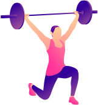

Vyayam, the Ayurvedic concept of physical exercise, emphasizes
the importance of regular physical activity such as yoga,
walking, or other forms of exercise. Incorporating regular
physical exercise into our daily routine can help improve
flexibility, strength, balance, coordination, cardiovascular
health, and boost the immune system.
